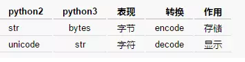

之前做Spark大数据分析的时候，考虑要做Python的版本升级，对于Python2和Python3的差异做了一个调研，主要对于语法和第三方工具包支持程度进行了比较。
Python3对Unicode字符的原生支持
Python2中使用 ASCII 码作为默认编码方式导致string有两种类型str和unicode，Python3只支持unicode的string。python2和python3字节和字符对应关系为：

Python3采用的是绝对路径的方式进行import。
Python2中相对路径的import会导致标准库导入变得困难（想象一下，同一目录下有file.py，如何同时导入这个文件和标准库file）。Python3中这一点将被修改，如果还需要导入同一目录的文件必须使用绝对路径，否则只能使用相关导入的方式来进行导入。
Python2中存在老式类和新式类的区别，Python3统一采用新式类。新式类声明要求继承object，必须用新式类应用多重继承。
Python3使用更加严格的缩进。Python2的缩进机制中，1个tab和8个space是等价的，所以在缩进中可以同时允许tab和space在代码中共存。这种等价机制会导致部分IDE使用存在问题。Python3中1个tab只能找另外一个tab替代，因此tab和space共存会导致报错：TabError: inconsistent use of tabs and spaces in indentation.
print语句被python3废弃，统一使用print函数
exec语句被python3废弃，统一使用exec函数
execfile语句被Python3废弃，推荐使用exec(open("./filename").read())
不相等操作符"<>"被Python3废弃，统一使用"!="
long整数类型被Python3废弃，统一使用int
xrange函数被Python3废弃，统一使用range，Python3中range的机制也进行修改并提高了大数据集生成效率
Python3中这些方法再不再返回list对象：dictionary关联的keys()、values()、items()，zip()，map()，filter()，但是可以通过list强行转换：
mydict={"a":1,"b":2,"c":3}
mydict.keys() #<built-in method keys of dict object at 0x000000000040B4C8>
list(mydict.keys()) #['a', 'c', 'b']迭代器iterator的next()函数被Python3废弃，统一使用next(iterator)
raw_input函数被Python3废弃，统一使用input函数
字典变量的has_key函数被Python废弃，统一使用in关键词
file函数被Python3废弃，统一使用open来处理文件，可以通过io.IOBase检查文件类型
apply函数被Python3废弃
异常StandardError 被Python3废弃，统一使用Exception
浮点数除法操作符/和//区别
异常抛出和捕捉机制区别
raise IOError, "file error" #抛出异常
except NameError, err: #捕捉异常raise IOError("file error") #抛出异常
except NameError as err: #捕捉异常for循环中变量值区别
i = 1
print （'comprehension: ', [i for i in range(5)]）
print （'after: i =', i ） #i=4i = 1
print （'comprehension: ', [i for i in range(5)]）
print （'after: i =', i ） #i=1round函数返回值区别
isinstance(round(15.5),int) #Trueisinstance(round(15.5),float) #True比较操作符区别
11 < 'test' #True11 < 'test' # TypeError: unorderable types: int() < str()所有在Python3.X中增加的新特性在Python2中都不支持，这些新特性的说明在官网中有详细的说明：
国内有对这些特性中的重要点进行介绍的博文，可以作为参考：http://www.cnblogs.com/animalize/p/5633215.html
我们在pip官方下载源pypi搜索Python2.7和Python3.5的第三方工具包数可以发现，Python2.7版本对应的第三方工具类目数量是28523,Python3.5版本的数量是12457，这两个版本在第三方工具包支持数量差距相当大。
https://pypi.python.org/pypi?:action=browse&c=532
https://pypi.python.org/pypi?:action=browse&c=607
我们从数据分析的应用角度列举了常见实用的第三方工具包（如下表），并分析这些工具包在Python2.7和Python3.5的支持情况：
| 分类 | 工具名 | 用途 |
|---|---|---|
| 数据收集 | scrapy | 网页采集，爬虫 |
| 数据收集 | scrapy-redis | 分布式爬虫 |
| 数据收集 | selenium | web测试，仿真浏览器 |
| 数据处理 | beautifulsoup | 网页解释库，提供lxml的支持 |
| 数据处理 | lxml | xml解释库 |
| 数据处理 | xlrd | excel文件读取 |
| 数据处理 | xlwt | excel文件写入 |
| 数据处理 | xlutils | excel文件简单格式修改 |
| 数据处理 | pywin32 | excel文件的读取写入及复杂格式定制 |
| 数据处理 | Python-docx | Word文件的读取写入 |
| 数据分析 | numpy | 基于矩阵的数学计算库 |
| 数据分析 | pandas | 基于表格的统计分析库 |
| 数据分析 | scipy | 科学计算库，支持高阶抽象和复杂模型 |
| 数据分析 | statsmodels | 统计建模和计量经济学工具包 |
| 数据分析 | scikit-learn | 机器学习工具库 |
| 数据分析 | gensim | 自然语言处理工具库 |
| 数据分析 | jieba | 中文分词工具库 |
| 数据存储 | MySQL-python | mysql的读写接口库 |
| 数据存储 | mysqlclient | mysql的读写接口库 |
| 数据存储 | SQLAlchemy | 数据库的ORM封装 |
| 数据存储 | pymssql | sql server读写接口库 |
| 数据存储 | redis | redis的读写接口 |
| 数据存储 | PyMongo | mongodb的读写接口 |
| 数据呈现 | matplotlib | 流行的数据可视化库 |
| 数据呈现 | seaborn | 美观的数据可是湖库，基于matplotlib |
| 工具辅助 | jupyter | 基于web的python IDE，常用于数据分析 |
| 工具辅助 | chardet | 字符检查工具 |
| 工具辅助 | ConfigParser | 配置文件读写支持 |
| 工具辅助 | requests | HTTP库，用于网络访问 |
Python2 无法安装mysqlclient。Python3 无法安装MySQL-python、 flup、functools32、Gooey、Pywin32、 webencodings。
matplotlib在python3环境中安装报错：The following required packages can not be built:freetype, png。需要手动下载安装源码包安装解决。
scrapy在python3环境中安装报错，需安装VC++2015安装包： http://landinghub.visualstudio.com/visual-cpp-build-tools
scipy在Python3环境中安装报错，numpy.distutils.system_info.NotFoundError，需要自己手工下载对应的安装包，依赖numpy,pandas必须严格根据python版本、操作系统、64位与否。
运行matplotlib后发现基础包numpy+mkl安装失败，需要自己下载，国内暂无下载源
python2无法安装mysql-python和mysqlclient包，报错：EnvironmentError: mysql_config not found，解决方案是安装mysql-devel包解决。使用matplotlib报错：no module named _tkinter，安装Tkinter、tk-devel、tc-devel解决。
pywin32也无法在centos环境下安装。
解决上述的安装问题后，编写了测试脚本(附录)运行上述工具包的简单案例，测试结果均通过，表明上述第三方工具包安装成功后在Windows和Centos环境下均可以成功运行。